01 · Dudas frecuentes
Responde preguntas sobre estudios, preparación, horarios y ubicación de cada sucursal, las 24 horas.
Presentación del segundo trimestre: lo que se construyó en desarrollo web, identidad de marca y redes sociales, y hacia dónde va el trabajo en los próximos meses.

×Tres frentes trabajando en paralelo desde el 5 de mayo: el sitio, la identidad de marca y la presencia en redes sociales de Laboratorios BIOS.
El sitio ya está en pie. Lo que falta depende de una decisión externa antes de poder avanzar.
En cuanto se destrabe la conexión con el sistema, el bot es el siguiente desarrollo en la fila. Así queda planteado su alcance para que BIOS lo tenga presente al decidir proveedor.
Responde preguntas sobre estudios, preparación, horarios y ubicación de cada sucursal, las 24 horas.
Consulta precios y arma cotizaciones de paquetes de estudios, conectado al catálogo del sitio.
Ofrece horarios disponibles por sucursal y confirma la cita sin intervención humana.
Si el caso lo requiere, transfiere la conversación a un asesor humano por WhatsApp con el contexto ya recabado.
Logotipo y variantes de Laboratorios BIOS y de Plaza Tauro, más toda la papelería y material de sucursal ya en circulación.
7 de mayo → 4 de agosto de 2026. Las publicaciones arrancaron el 15 de mayo, desde cero.
Así nos ve hoy la gente en Google, ficha por ficha. Este es el punto de partida del trabajo del próximo trimestre.
Más personas cerca de BIOS. Más confianza en cada sucursal.
Lograr que BIOS tenga una presencia digital más sólida, cercana y confiable en las zonas donde opera, conectando sus redes sociales, sitio web, sucursales y perfiles de Google dentro de una misma estrategia.
Organizar la presencia digital de cada sucursal, detectar los principales problemas de reputación y establecer un sistema permanente para solicitar, responder y dar seguimiento a las reseñas.
Revisión de cada perfil de BIOS en Google para identificar calificación, reseñas, frecuencia, comentarios positivos, quejas recurrentes, reseñas sin respuesta, información incorrecta, fotografías y datos por corregir.
Actualización de nombre, dirección, horarios, teléfono, sitio web, servicios, fotografías, descripción, enlaces de contacto y ubicación precisa de cada sucursal.
Código QR por sucursal, enlace directo a Google Maps, material para recepción y salas de espera, mensaje digital para WhatsApp, texto para el personal y recordatorio posterior. Siempre dirigido a pacientes reales.
Guía para reseñas positivas, neutrales, quejas, dudas, instalaciones y casos que requieran seguimiento privado. Respuestas humanas, respetuosas y personalizadas.
Guía breve para explicar cuándo solicitar una reseña, cómo compartir el QR, qué lenguaje utilizar, qué evitar y cómo escalar una inconformidad delicada.
Aumentar la cantidad de personas que descubren BIOS dentro de las zonas cercanas a cada sucursal y posicionar la marca como una opción confiable, accesible y profesional.
Publicaciones sobre ubicación, horarios, servicios, cómo llegar, instalaciones, equipo, preparación, preguntas frecuentes, estudios de laboratorio, prevención y fechas relevantes de salud.
Campañas dirigidas a personas que viven, trabajan o transitan cerca, con llamados a Google Maps, sitio web, WhatsApp, servicios, sucursal o formulario de contacto.
Secciones por ubicación, dirección, teléfono, horario, mapa, servicios, botones de Google Maps, títulos, descripciones, preguntas frecuentes y navegación móvil.
Presentación del equipo, procesos, recorridos, explicación de estudios, preparación, mitos, testimonios autorizados, innovación, calidad, higiene y seguridad.
Convertir el alcance generado en conversaciones, visitas al sitio, solicitudes de información, indicaciones para llegar a una sucursal y nuevas reseñas.
Preguntas frecuentes, encuestas, verdadero o falso, mitos, cuestionarios, consejos, publicaciones guardables, historias con preguntas y explicaciones sencillas.
Cada contenido dirigirá a consultar un servicio, escribir por WhatsApp, visitar el sitio, abrir Google Maps, conocer una sucursal, revisar requisitos, solicitar información o dejar una reseña.
Clasificación de solicitudes, precios, horarios, preparación, quejas, comentarios positivos, ubicaciones, posibles pacientes y temas que requieran atención interna.
Refuerzo en sucursales con menor crecimiento, revisando materiales, horarios, comentarios repetidos, puntos del servicio y necesidades de apoyo.
Reporte comparativo con calificaciones, reseñas, respuestas, alcance, interacciones, visitas, clics, mejores contenidos, crecimiento, comentarios y recomendaciones.
Durante los tres meses, Partum Design coordinará la estrategia, preparará los materiales, revisará resultados y presentará recomendaciones.
La estrategia se evaluará con indicadores de alcance de marca, interacción y reputación: personas alcanzadas, impresiones, seguidores, visitas, búsquedas, clics, reacciones, comentarios, mensajes, consultas, reseñas, calificación, porcentaje y tiempo de respuesta.
Un calendario ordenado por objetivo, no solo por fecha: campañas que buscan venta directa, campañas que buscan abrir una conversación, y campañas que construyen reconocimiento de marca. Cada una con su estatus de aprobación.
Impulsa a quienes ya cotizaron un estudio a agendar su cita, con recordatorio directo y oferta de vigencia limitada.
Promoción por sucursal de paquetes de laboratorio con precio especial, dirigida a quienes ya interactuaron con BIOS.
Convierte el alcance acumulado de los dos meses previos en citas agendadas, con landing y cotizador conectado.
Invita a la audiencia a resolver dudas antes de su estudio directamente por WhatsApp, con botón fijo en cada publicación.
Genera conversación directa resolviendo dudas comunes sobre estudios, preparación y tiempos de entrega.
Formulario corto de contacto para pedir información o agendar cita con un solo paso, sin salir de la conversación.
Da a conocer el nuevo logotipo y la imagen actualizada de BIOS en redes y en cada sucursal.
Contenido con equipo, instalaciones y proceso de atención para generar cercanía con la comunidad local.
Campaña de alcance ligada a una fecha relevante de salud pública, para reforzar presencia de marca en la zona.